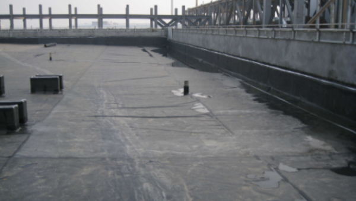
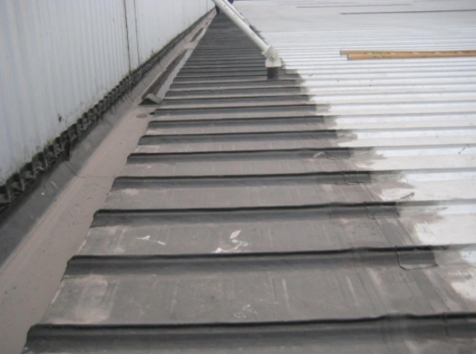
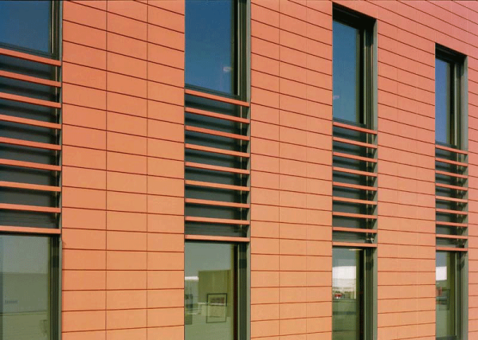

客户案例

中铁物资成都物流有限公司库房屋面和墙面，90,000m2，压型钢板

沙伯基础创新塑料（重庆）有限公司厂房屋面，9,000m2，TPO

重庆机场T3航站楼停车楼种植屋面，95,000m2，TPO

重庆机场T3航站楼控制中心大楼屋面，8,000m2，TPO

沃尔沃汽车成都工厂办公楼屋面，5,000m2，EPDM

中烟西昌卷烟厂屋面修复，4,500m2，PVC

普惠艾特航空制造（成都）有限公司屋面修复，4,000m2，EPDM

成都艾普中心办公楼幕墙 ，30,000m2，陶板和陶棍

太古里成都居舍酒店幕墙，30,000m2，陶砖